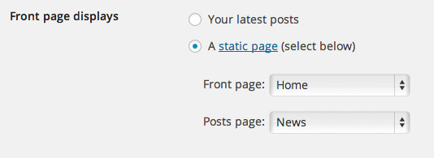

8.1. News Page
Home Page displays your latest posts. This is default WordPress setting.
If you don't want to use latest posts for your home page you can navigate to the Settings > Reading and instead of the default "Front Page - Your latest posts" choose "A static page" and choose appropriate pages for the home and blog page.

8.2 Intro about post and "Post Formats"
Using Post Formats feature we styled differently each post format and added different content as well.
How this works?
First navigate to Post and create new post, for example "Post Format: Standard Sticky".


If featured image is uploaded it will be shown on the top of the content like in this example.
"Post Formats" are available to choose for each post.

What is sticky post and how to choose it?
"Sticky" post always comes out as the first post and it is usually used to highlight an important post. More about "sticky" post can be found here : codex.wordpress.org/sticky-posts.
Inside the box Publish > Visibility you'll be able to choose "Stick this post to the front page".

You can choose whichever post you want for your sticky post.
8.3 Format Quote
To create it, first navigate to Post and create a new post.


This is the code we used for testimonial:
8.4 Format Image
First navigate to Post and create a new post.


8.5 Sidebar
News and single post pages are using "Right Sidebar". To fill it with the content navigate to Appearance > Widgets > Right Sidebar and add your content inside.

We used "Text" widget with this content:
Next we used "Recent Posts", "Social Icons", "Soliloquy" and "Text" widgets. You are free to use whatever widget you want!